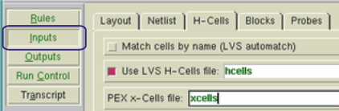
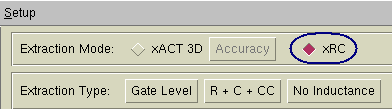
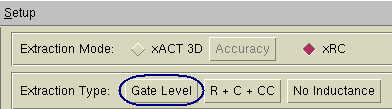

This procedure
specifies the settings particular to running gate-level extraction
from Calibre Interactive.
Prerequisites
Hcell
file or Hcell statement
that includes all cells also listed in the xcell file.
Xcell
file listing cells which will not undergo parasitic extraction.
All entries are treated as primitives. You can re-use the hcell
file.
Layout
database that is LVS-clean.
A
valid PEX rule file for this layout.
For more information refer
to “Prerequisites for Performing Parasitic Extraction”.
Procedure
- Start the PEX interface in
Calibre Interactive:
- Load a runset or rulefile.
- Specify the hcells, xcells,
and extraction type.
- Click the Inputs button in the left pane.
Select the H-Cells tab. Specify the hcell
and xcell files in the appropriate fields. (They can be the same
file.)
Figure 1. Specifying HCell and
XCell Files in Calibre Interactive 
- Click the Outputs button in the left pane.
Set Extraction Mode to xRC.
Figure 2. Extraction Mode
- In the area above the tabs,
set Extraction Type to Gate Level.
Figure 3. Gate Level Setting 
- Set other controls as needed.
When ready, click the Run PEX button
in the left pane.
Results
Check the Transcripts pane to verify
the run completed with no errors. If you have selected “View netlist
after PEX finishes” in the Outputs pane, a text viewer appears with
the generated netlist loaded.